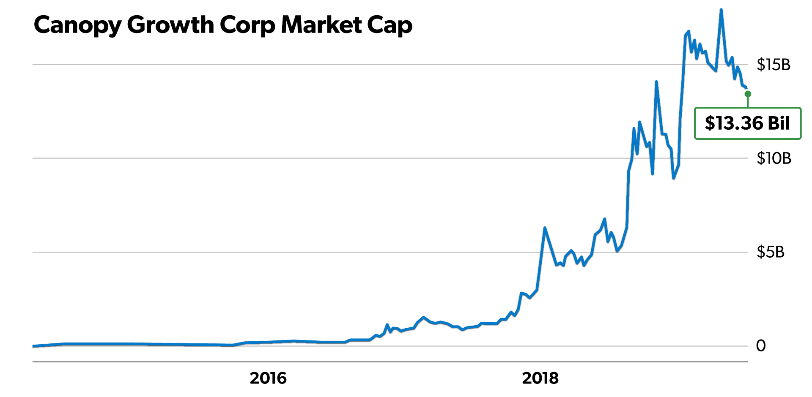
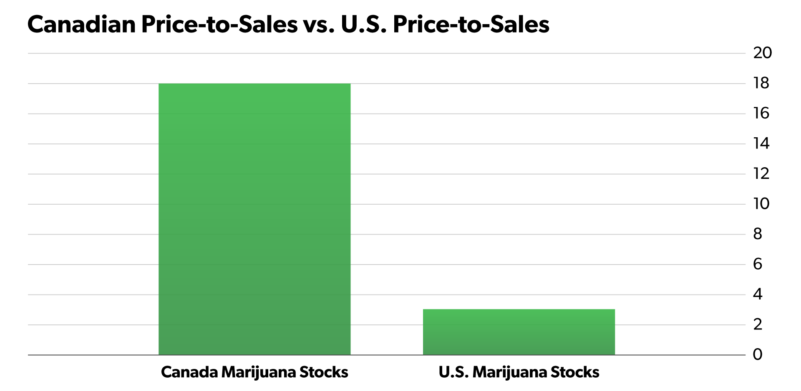

By Matt McCall
Get Ready: U.S. Marijuana Legalization Is Coming
Note: Each day leading up to the 10X Innovation Summit, Matt will release a brand-new video and article, explaining one of the investing “megatrends” he is closely tracking right now. Watching these videos is the best way to prepare for the big night, so be sure to check back daily through July 31st.
Oh boy… the lemmings are really piling into marijuana stocks.
As my longtime readers know, I’ve been recommending marijuana investments since 2014… five years now. Many of my early recommendations have soared hundreds, even thousands of percent. I’ve gotten to know many of the most important players in the industry. I’ve also personally invested in private marijuana deals that have produced some stunning successes.
A colleague of mine even refers to me as “The Original Marijuana Stock Bull.”
I’m not one to toot my own horn, but I’m flattered to be considered one of the earliest and most plugged-in marijuana investors. But at no time in the past five years have I seen the level of marketing related to marijuana investments that we’re seeing now. It seems that everyone is starting to call themselves a marijuana expert. Guys who were defense industry analysts a month ago are now pounding the table on marijuana.
I guess it’s better late than never?
Interest in sectors and asset classes ebbs and flows. Right now, interest in marijuana is very high. This tells me we’re likely due for a short-term correction. And indeed, marijuana stocks as a group are well off their highs from earlier this year.
However, don’t make the same mistake a lot of people will make when short-term corrections come. Don’t sell your holdings because some idiot tells you “the marijuana bubble has popped.”
Instead of selling, just remember: When you study the history of massive, world-altering business trends and the long-term wealth-building opportunities they create, you’ll learn that any time a major new industry is in its early stages, temporary bouts of extreme enthusiasm followed by sharp corrections (aka “high volatility”) are the norm – not the exception.
This is what many cannabis skeptics fail to mention in their critiques of the sector. They see excesses of short-term optimism and then make blanket statements about how the whole sector is a terrible investment that should be avoided like the plague forever. They make no distinction between short-term “froth” in the market and the incredible long-term business fundamentals.
Anyone who says the bull market in legal marijuana is over just because the market is “short-term overheated” is revealing a deep ignorance of business trends and investment history. They need to go back to investment school (figuratively or literally), if they ever went there at all.
I encourage you to view the legal marijuana market like a seasoned growth investor views it. Make the intelligent distinction between the very short-term picture and the long-term picture … and focus on the long-term picture.
Folks, focusing on the long-term picture has never been more important.
That’s because a huge, game-changing development for the marijuana industry is set to happen relatively soon.
President Donald Trump is going to nationalize marijuana on the federal level.
As you can guess, this has ENORMOUS implications for us as marijuana investors. In this essay, I’ll tell you all about them and highlight some of the marijuana stocks that will benefit.
The Road to Legalization
One of the most important developments in the history of the U.S. marijuana industry hit the headlines just before the Easter holiday.
Canadian marijuana giant Canopy Growth (CGC) announced that it was buying a U.S.-based marijuana company called Acreage Holdings. The complex deal valued Acreage at about $3.4 billion, which was 42% over the company’s average value the prior four weeks.
I knew right away that the deal would only make sense if marijuana were legal in the U.S. After all, if Canopy bought Acreage while marijuana is illegal federally, the world’s largest pot stock would have to delist from both the New York Stock Exchange (NYSE) and the Toronto Stock Exchange (TSX). Financial regulations prevent any company that generates revenue from a federally illegal business in the U.S. to list on a major stock exchange.
There is no way the company would ever delist, so my initial reaction was that Canopy must know something I did not – that U.S. legalization must be a near certainty… and probably a lot closer than many anticipate.
I looked into the deal further, and it became clearer that Canopy almost certainly had unique insight into the future. I believe that’s the case because Acreage’s Board of Directors includes three of the most politically-connected people on the planet: former U.S. Speaker of the House John Boehner, former Massachusetts governor and current presidential candidate William Weld, and former Prime Minister of Canada Brian Mulroney.
The knowledge and connections of those three men are unparalleled. Canopy’s due diligence had to be extensive, and the evidence must have been so compelling that the company determined it was time to plant its flag in the U.S.
Management was smart enough to structure the deal so that the acquisition will officially take place when marijuana becomes legal in the U.S. Still, Canopy would not have agreed to the deal if they knew the ending of this story was uncertain and years away.
Some people have said that Canopy already made its move into the U.S. when it announced intentions to spend up to $150 million on a hemp industrial park in New York. But they are really missing the significance of this latest deal. The first big difference is that hemp is now legal in the U.S. The second is the amount of money involved. Canopy is spending more than 22X its hemp investment to buy Acreage.
The Canopy-Acreage news would be huge on its own, but it is especially telling when you know the industry and can connect the dots. It’s the latest domino to fall in the move toward legalization, and it is one of the biggest. But it is far from the only one. Here are six more catalysts that confirm we are on the road to national legalization.
Catalyst #1: SAFE Banking Act & STATES Act
The first official step to full-blown legalization will likely be passage of the Secure and Fair Enforcement (SAFE) Banking Act and/or the Strengthening the Tenth Amendment Through Entrusting States (STATES) Act.
In March, the SAFE Banking Act passed the U.S. House Committee on Financial Services with bipartisan support. The next step is a vote in front of the full House of Representatives. The Democrats have a majority, so passage is likely.
The big hurdle will be the Senate, where Republicans have the majority. Still, I would not say the bill is dead on arrival there. Of the 246 total cosponsors of the SAFE Banking Act, 30 are Republicans. I know that number sounds low, but it is the best support any marijuana legislation has received.
If passed, the bill will allow banks to work with marijuana companies without fear of breaking any laws. Only a small number of regional banks and credit unions currently take the risk of offering services to the industry. Banking costs for marijuana companies are exceptionally high – try $5,000 a month maintenance fees! – due to the risk banks are taking by technically breaking federal laws.
The ability to bank like a normal business would be a game changer for the marijuana industry. For now, one of my favorite stocks, Innovative Industrial Properties (IIPR), provides a creative solution by buying the land to grow marijuana and leasing it to companies. The stock has flown 300% higher in just eleven months since I recommended it. I think it will continue to do extremely well – possibly even better – with legalization.
The other piece of legislation, the STATES Act, will allow individual states to make their own laws on cannabis, including banking. Any bank lawfully working with marijuana businesses will be protected under the STATES Act.
This bill was part of the original blueprint that Representative Earl Blumenauer (D-OR), co-chair of the Congressional Cannabis Caucus, put together to legalize marijuana federally by the end of this year. Several Republicans signed on as co-sponsors of the STATES Act, but it has been stuck in the political process. Nearly all new bills take time to get passed.
At least one of these bills will likely be passed in the coming months, and possibly both. Either would be a major step toward legalizing marijuana in the U.S.
Catalyst #2: The 2020 Election
The 2020 presidential election is already in the daily headlines. I’ve lost track of the number of Democrats that have thrown their hats into the ring. I know it’s more than 20… and the election is still more than a year away!
These candidates come from all types of backgrounds and take varying positions on an array of issues. Some are far left and others are more moderate. The candidates will undoubtedly take vicious shots at each other as they try to secure the Democratic nomination, but there is one topic that could create that kumbaya moment – marijuana.
Nearly every Democratic candidate has called for legalization of even recreational marijuana as well as expunging federal charges related to cannabis. Former Vice President Joe Biden is one major exception, though he does support decriminalizing marijuana. I don’t think we’ve heard the last from him on this issue. Expect the topic to be at the forefront of town halls and debates over the next 16 months.
In the meantime, several bills were introduced in the last year that would legalize marijuana nationwide. Perhaps the most interesting – and one that has the backing of big-name Democrats – is the Marijuana Justice Act. It was originally introduced in 2017, but a vote never took place. New Jersey Senator Cory Booker reintroduced the bill in February. Its chances of getting through the Senate are very low, but the bill does put pressure on the Republicans up for re-election. That brings me to the next catalyst…
Catalyst #3: President Trump
I have attended a few cannabis conferences recently, and I stay in touch with industry insiders. In just the last few months, I’ve noticed a significant increase in the number of insiders who expect President Trump to introduce a bill to legalize marijuana. Based on what I’m hearing from them and people who have connections in D.C., the odds of the president introducing such a bill are now well above 50%.
It would arguably be President Trump’s boldest move yet. I don’t think his view on marijuana has changed over the years, but all politicians from both sides of the aisle strive to get re-elected.
We know President Trump wants another term, and according to a poll by Civilized, cannabis users plan to vote come November 3, 2020. Civilized is a pro legalization site, but about 90% of people surveyed said they intend to vote in the next presidential election. That’s significant, and about 3% higher than non-cannabis consumers.
Also significant, about one-third of those polled were Republicans. The Democrats have always been considered the more liberal social party that would lead the charge to legalize marijuana. That may still be true, but Republicans are starting to realize the next presidential election will be extremely tight, and that one or two topics could decide who will be the next president.
I expect one of those topics will be marijuana. Democrats will make sure it is front and center in all debates. It makes sense politically. Backing marijuana’s legalization will not hurt the party’s voter base and could bring some moderates over to their side.
That is where President Trump comes into play. If legalizing marijuana can swing some moderate Democrats to his side, he will not hesitate. I and others I talk with increasingly believe President Trump will strike preemptively and legalize marijuana before the election.
Note: Please understand that my analysis on politics and the stock market are 100% from an investing point of view. I have no desire to push any type of politics on you in any manner. I hate it when other people do that to me, and I would never do it to you. My one and only goal is to make you money.
Catalyst #4: The DEA
Marijuana remains a Schedule 1 drug in the United States, which is one reason it is illegal. According to the Drug Enforcement Administration (DEA), Schedule 1 drugs are generally unsafe with a high potential for abuse and no accepted medical use.
More and more studies refute all three of those criteria when it comes to marijuana. The last qualifier – no accepted medical use – is now known to be simply false.
Which brings us to the very odd dynamic of 33 states now allowing medical marijuana at a time when the federal government says it is illegal. Eleven of those states have even legalized recreational marijuana. They are slowly forcing the federal government’s hand.
In addition, more than 50 countries around the world have already legalized some form of medical cannabis. The U.S. is the outlier. The most technologically advanced country in the world is living in the Stone Age when it comes to its view on marijuana.
What will it take for the DEA to remove marijuana from Schedule 1? Well, the first thing is old-fashioned common sense. Cocaine, methamphetamine, and oxycodone are all Schedule 2 drugs, which in theory means they are less dangerous than marijuana. That’s crazy. You don’t need a medical or biology degree to see how ridiculous that is.
Beyond common sense, there are other things that will force the DEA to change marijuana’s classification. The most likely are more studies demonstrating the positive medicinal effects of marijuana.
This is yet another silly situation because government regulations make it extremely difficult to perform those studies. However, Attorney General William Barr has said he supports more marijuana research, and the more individual states do, the higher the likelihood the scheduling will change.
The bottom line is that the DEA’s blessing is necessary for marijuana to be legalized. If all other parties, including Congress and President Trump, get behind legalization, the DEA will have no choice but to succumb to the pressure.
Catalyst #5: The Farm Bill
Something called the Farm Bill doesn’t sound all that exciting, but believe me, it is. The bill, passed in December, legalized hemp in the U.S. for the first time in over 80 years.
To be clear, the legalization of hemp did not have any direct effect on marijuana laws. But it did open up the conversation of doing the same thing with cannabis, which is important. If the Farm Bill was a test run of legalization, the government should be satisfied.
We’re already seeing demand for hemp-related goods. Products that include cannabidiol (CBD), the non-psychoactive part of the plant, are now found in food, drinks, skincare products, etc. What’s more, they are available at places like CVS, Walgreens, and Bed, Bath & Beyond. The hemp-CBD market is expected to balloon 40X over the next few years.
Catalyst #6: Money, Money, Money
Good or bad, right or wrong, most decisions are made based on money. When it comes to marijuana, the dollar signs are too big to ignore.
The amount of tax revenue that states could generate from legal marijuana is impressive. And when politicians of one state watch neighboring states bring in revenue, it puts pressure on them to get in on the action. Thus, the snowball effect of more states legalizing marijuana.
Let me show you just how eye-popping the numbers are:
Colorado was the first state to legalize recreational marijuana in 2014. This year, the state passed more than $1 billion in tax revenue from sales of legal marijuana.
California, which sells more marijuana than Canada, expects its excise tax on marijuana will generate $355 million in the 2018-2019 tax year and $514 million next year.
Last year, Michigan became the tenth state to legalize recreational marijuana. It estimates $737.9 million in additional tax revenue in the first four years.
Massachusetts, also new to legalized recreational marijuana, expects to generate $219 million the first two years.
A study by the University of Illinois concluded that legalization in that state – which just happened – would lead to $500 million in new tax revenue as well as 24,000 new jobs.
Job creation is an often overlooked benefit of legalization. One study shows that marijuana could result in over 300,000 new jobs by 2020.
California has already created 80,000 jobs in the marijuana industry, according to a study from ICF International. To put that into money terms – that is a $3.5 billion increase in labor income. And guess what? More income taxes as well.
All states would love to have hundreds of millions in additional revenue. Again, not all decisions should be based on money. But, when something makes overwhelming sense from a financial standpoint, it will help garner more support.
You can see that the argument for marijuana legalization definitely has the power of money behind it. We’re interested in the power of money from an investing viewpoint, so let’s talk about the massive potential in front of us as the United States heads toward legal marijuana.
The Great American Opportunity
Last year, Canada transformed itself from the Great White North, as it is often referred to, into the Great Green North. It became the first major country to fully legalize marijuana on all levels. The move had been in the works for years, and when it finally came to fruition in October 2018, it made a lot of people a lot of money.
The largest marijuana company in the world, Canopy Growth (CGC), is based in Canada and now worth $13 billion. (My readers are up over 20% in the stock.) In fact, the five biggest marijuana companies in the world are in Canada, which is clearly the early leader in the booming industry.
Canopy Growth is a great example of a stock that could have made average investors a lifetime of profits. It went public five years ago in April 2014. Since then, it has been one of the best performers in both the U.S. and Canada. It took two years before the stock started its parabolic rise, but that’s not unusual. It’s why we invest for the long term – to make sure we capture those kinds of profits.
The chart below shows Canopy’s market cap along the way. During the first half of 2014, the company was worth a mere $20 million. By September 2015, it had tripled but was still valued at just $61 million. Today, Canopy Growth is worth more than 200 times that at around $13 billion.
This one company already created billions in wealth for its shareholders. There are many more Canadian marijuana companies that have grown from microcap stocks worth less than $100 million to valuations well above $1 billion.
With marijuana illegal in the U.S., stocks based here are still in the earlier part of that chart. There are major limitations on how marijuana companies do business. These limitations result in the stocks trading at a major discount to their Canadian peers.
To give you a sense for just how discounted U.S. stocks are, look at the chart below. It shows the forward price-to-sales (P/S) ratio of four of the largest Canadian marijuana stocks compared with the forward price-to-sales ratio of four of the largest U.S. marijuana stocks (based on expected future sales). The majority of marijuana stocks are not yet profitable, so price-to-sales is a better assessment of value than price-to-earnings.
As you can see, Canadian marijuana stocks trade at a huge premium to U.S. marijuana stocks. The gulf in valuation is due to differences in federal regulation.
In general, big U.S. marijuana stocks are valued at about 14% of their Canadian peers. This is absolutely crazy to me. But I absolutely love it because it’s a huge opportunity.
The California marijuana market alone is bigger than all of Canada… and it’s growing. If and when U.S. legalization occurs, this country will immediately become the largest market in the world. In fact, it will be bigger than the rest of the world combined.
Even if legalization takes longer than I anticipate, the gap in valuations will lessen in the next 18 months. That’s why U.S. marijuana stocks are one of the best buying opportunities in the entire market, not just the cannabis sector.
Regards,

Matt McCall
Senior Investment Strategist, InvestorPlace